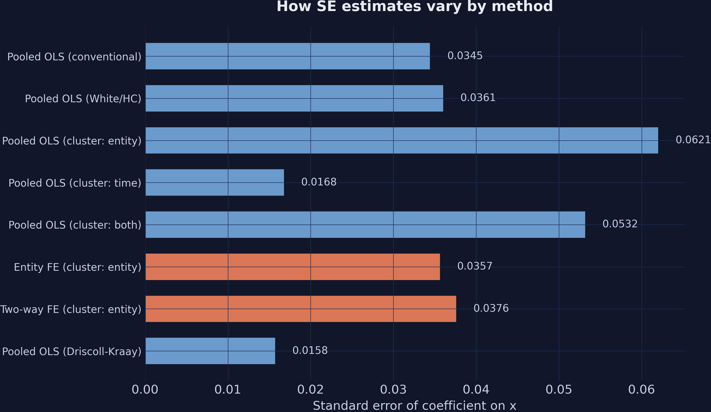
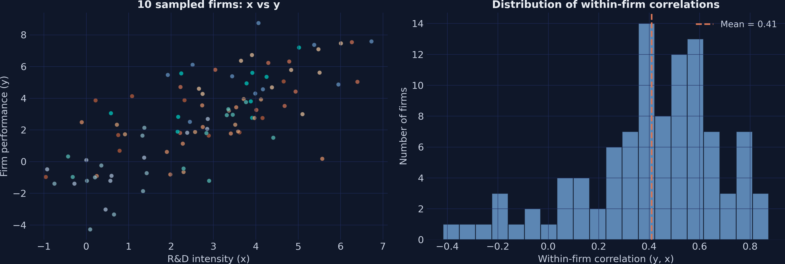
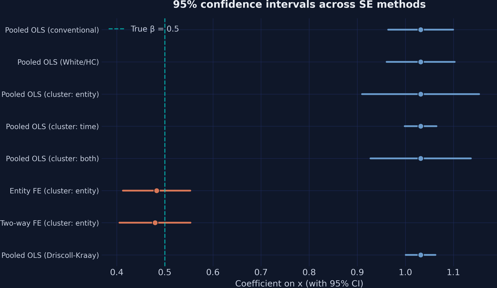
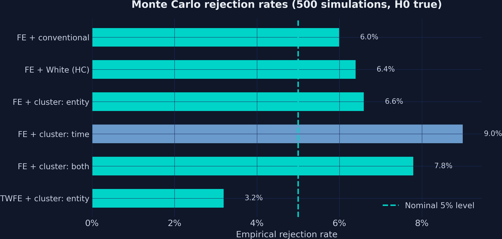
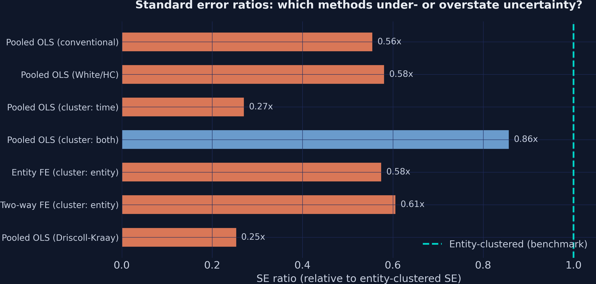

Which estimator gives you honest inference? A Python tutorial
Nagoya University (GSID)
June 11, 2026
Act I
You regress firm performance on R&D intensity and get a t-statistic of 30. Rock-solid?
In panel data, firm 1 in 2015 is not independent of firm 1 in 2016. Conventional standard errors assume it is — and the precision they report is fake.

Eight model–SE combinations. The point estimate is fixed; only the bars (the standard errors) move.
Act II
Because ability drives both \(x\) and \(y\), pooled OLS is biased by design — and AR(1) errors make SE choice critical.
\[y_{it} = 2.0 + 0.5\,x_{it} + \mu_i + \lambda_t + \varepsilon_{it}\]

10 sampled firms cluster in distinct regions (left); within-firm \(y\)–\(x\) correlations center on 0.41 (right).
| Model / SE | \(\hat\beta\) | SE | \(t\) |
|---|---|---|---|
| Pooled OLS (conventional) | 1.0318 | 0.0345 | 29.9 |
The estimate is wrong, and the tiny SE makes us wrongly confident in the wrong number.
\[\hat{\Sigma}_{\text{White}} = (X'X)^{-1}\left(\sum_{i=1}^{N} X_i'\,\hat{e}_i^{\,2}\,X_i\right)(X'X)^{-1}\]
White SE = 0.0361 vs conventional 0.0345 — the \(t\) slips only from 29.9 to 28.6.
| Model / SE | \(\hat\beta\) | SE | \(t\) |
|---|---|---|---|
| Conventional | 1.0318 | 0.0345 | 29.9 |
| White (HC) | 1.0318 | 0.0361 | 28.6 |
| Cluster: entity | 1.0318 | 0.0621 | 16.6 |
Ten observations from one firm carry far less than ten independent observations’ worth of information.
| Model / SE | \(\hat\beta\) | SE | \(t\) |
|---|---|---|---|
| Cluster: entity (100 groups) | 1.0318 | 0.0621 | 16.6 |
| Cluster: time (10 groups) | 1.0318 | 0.0168 | 61.3 |
| Cluster: both | 1.0318 | 0.0532 | 19.4 |
Cluster on the dimension with \(\ge 40\)–\(50\) groups. Here that is firms (100), not years (10).
0.48
Entity FE \(\hat\beta\) (true \(\beta = 0.5\)); SE 0.0357 · pooled OLS gave 1.03

95% CIs across all eight methods. Teal dashed line = true \(\beta = 0.5\). Pooled intervals (right) miss it; FE intervals (orange) cover it.
| Model / SE | \(\hat\beta\) | SE | \(t\) |
|---|---|---|---|
| Pooled (Driscoll-Kraay, BW=3) | 1.0318 | 0.0158 | 65.4 |
Smallest SE in the deck — because firms are independent given their fixed effects in this DGP.
Act III

Rejection rates over 500 simulations, six FE+SE combinations. Dashed line = nominal 5%.

SE ratios relative to the entity-clustered benchmark. Ratios below 1.0 understate uncertainty.
Objection. “Clustered/robust SEs and a 6.6% rejection rate mean my coefficient is now the true causal effect.”
Response. Standard errors fix inference, never identification. The 0.48 estimate is unbiased here only because fixed effects removed the time-invariant confounder \(\mu_i\). A time-varying confounder would still bias \(\beta\) — and no SE could detect it.